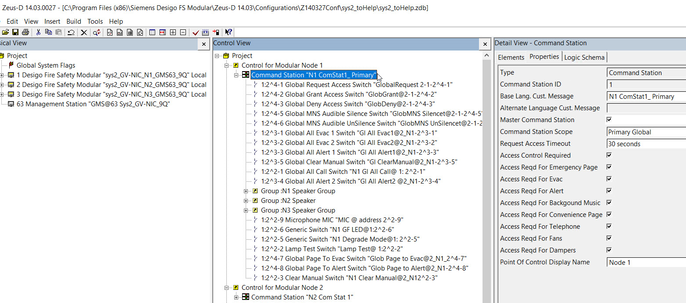
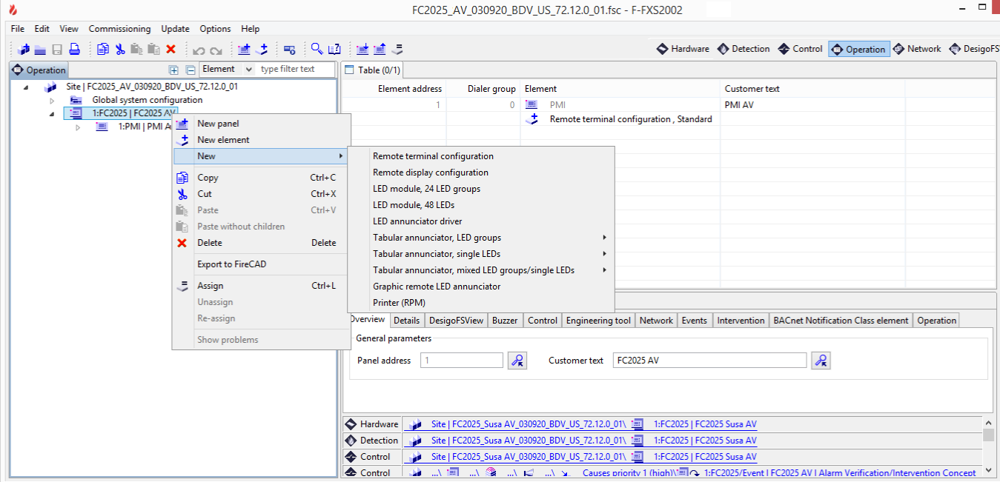

Colocated Request/Grant/Deny Control Panel Settings
Colocation of Control Panel and Management Station
In certain configurations and for certain management station hardware, UL and ULC norms require that the management station is located in the same room as the panel in control of the fire system.
To meet this requirement, the following configuration settings are required at panel and management station levels:
Fire Panel Configuration
- In the fire panel configuration, depending on the type of panel, do one of the following:
For Desigo Fire Safety Modular, Cerberus Pro Modular, and FireFinder XLS/MXL, in the Zeus tool, configure the Global Command Station as illustrated in the example below.
- For FS20 Desigo Fire and FS92 Cerberus Pro, in the FXS tool, configure an annunciator, terminal, or station element as illustrated in the example below.
In the management station, after importing the panel configuration, the possible control elements are represented as follows: - ConfigRemoteTerminalElem (RDT)
- ConfigRemoteLedAnnunciatorElem (RLA)
- ConfigLedAnnunciatorTabularLedIndicatorElem (RLA
- ConfigLedAnnunciatorTabularZoneIndicatorElem (RLA)
- ConfigLedAnnunciatorTabularMixedIndicatorElem (RLA)
- ConfigLedAnnunciatorGraphicElem (RLA)
- VoiceStationInternalElem (VOICE_STATION)
- VoiceStationRemoteElem (VOICE_STATION)

Management Station Configuration
In Desigo CC, configure the fire ownership to associate the panel to the corresponding management station:
- For Desigo Fire Safety Modular, Cerberus Pro Modular, and FireFinder XLS/MXL:
Set the Ownership Setting Station in Configure the ownership station. - For FS20 Desigo Fire and FS92 Cerberus Pro:
Set the Fire Control Ownership (Request/Grant/Deny) settings in Configure the BACnet Fire Network.